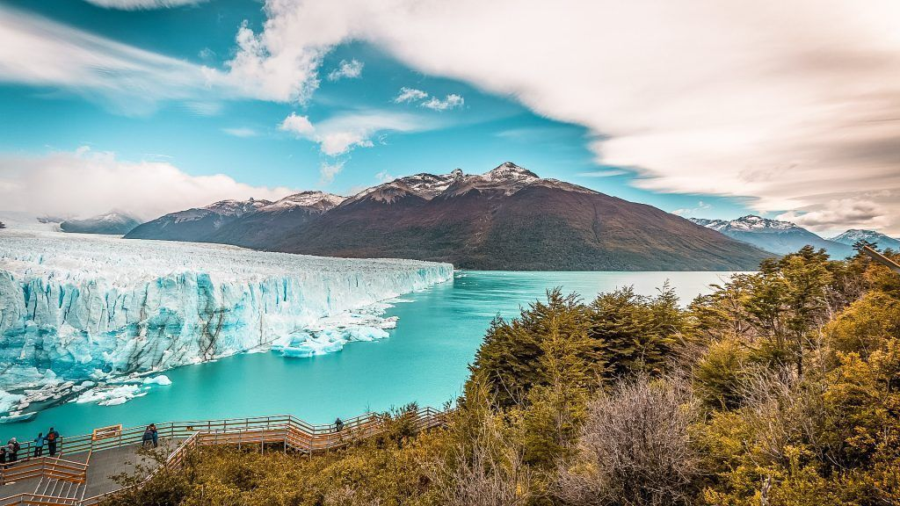

.png)
Destinos en Patagonia Argentina
El Calafate
El Calafate es una ciudad cerca del borde del Campo de Hielo Patagónico Sur en la provincia argentina de Santa Cruz. Es conocida principalmente como el acceso al Parque Nacional Los Glaciares, hogar del enorme glaciar Perito Moreno, cuyo dinámico paisaje de hielo es popular para el excursionismo y el turismo. Un moderno centro interpretativo llamado Glaciarium sirve de introducción a los numerosos glaciares de la región
El Chaltén

El Chaltén es una villa del Parque Nacional Los Glaciares, en la provincia argentina de Santa Cruz. Es una vía de acceso a los senderos que rodean las cimas del cerro Torre y el Monte Fitz Roy al noroeste. Cerca de Fitz Roy hay un sendero que llega al mirador Laguna de los Tres. Justo al noroeste de la aldea está la laguna Capri con vista a las montañas. Una de las calles principales de la villa es San Martín, bordeada de tiendas
Ushuaia
Ushuaia es una ciudad turística de Argentina. Se ubica en el archipiélago de Tierra del Fuego, el extremo austral de Sudamérica, apodado el "Fin del Mundo". Esta ciudad con mucho viento, ubicada en una escarpada colina, está rodeada de los montes Martial y el canal Beagle. Es una vía de acceso a los cruceros hacia la Antártida y a los recorridos cerca de la Isla Yécapasela, conocida como la "Isla Pingüino" por sus colonias de esta especie.